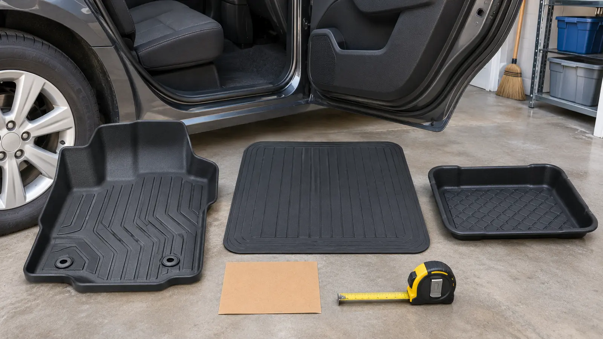

WINTER CAR GEAR · COMMERCIAL · AUTHORITY-EXPANSION
Family Winter Car Floor Mats: Vehicle-Specific Liners vs Trim-to-Fit Mats vs Boot Trays—and the Pedal Gate
The driver footwell is not a storage experiment. Start with the exact owner manual and retention system, then choose liners, mats or trays for the zones they can protect without moving under a pedal.

Original AI-assisted category image. It shows generic floor-protection forms, not exact products, a driver-footwell installation, vehicle fit, pedal clearance, testing, certification or affiliate product photography.
Pedal gate: the exact vehicle owner manual controls the driver footwell. Use only a mat designed for that footwell, secure every required retention device, never stack mats or coverings, keep loose objects away from pedals and regularly check that nothing moved. If fit or pedal clearance is uncertain, remove the mat and ask the vehicle manufacturer or a qualified dealer technician.
Commercial disclosure: this guide includes three Amazon Associate category links added through Mr Adventure Dad’s approved affiliate system. The site may earn from qualifying purchases at no added cost to you. No liner, mat or tray was hands-on tested; links do not prove exact fit, retention, floor compatibility, availability, price, rating or warranty.
The blunt version
Winter floor protection has three different jobs. A vehicle-specific liner tries to cover a particular footwell with molded edges and defined retention points. A universal or trim-to-fit rubber mat trades coverage precision for lower cost and broader use. A separate boot tray catches wet gear only when it sits in a passenger or cargo zone where the vehicle permits it. Do not make one category do all three jobs.
The driver zone is different because a shifted mat or loose object can interfere with accelerator or brake movement. Ford’s current owner-manual guidance says to use a mat designed for the vehicle footwell, secure both retention devices, never stack a covering on the original mat and keep objects from falling under pedals. Toyota’s manual guidance likewise requires the correct model and model year, secure hooks, no stacking and a pedal-clearance check with the vehicle stopped. Your manual—not this article—sets the exact procedure.
Choose the category by zone
Vehicle-specific deep liner
Fits: families who want molded edge coverage and have confirmed exact year, make, model, body style, seating layout and retention hardware. Tradeoff: higher cost, less transferable and still wrong if the listing or hooks do not match.
Universal or trim-to-fit mat
Fits: maker-permitted passenger or cargo positions where the measured flat area, edges and seat tracks are clear. Tradeoff: less edge coverage; cutting can expose weak edges or invalidate fit claims. Never trim for the driver zone unless the exact vehicle and mat instructions explicitly permit it.
Removable boot or cargo tray
Fits: wet shoes, gloves and small gear removed from feet and placed in a stable permitted rear-seat or cargo area while parked. Tradeoff: it is not a floor mat, passenger restraint or cargo tie-down and must not slide into a footwell.
No added covering
Fits: any driver footwell where exact compatibility, retention or pedal clearance is not proven. Clean the original surface more often rather than improvising.
Weakest-fit rule: exact vehicle compatibility, correct retention and full pedal clearance all must pass. One failure ends the purchase.
Build the fit record before shopping
Record year, make, model, body style, drive configuration if relevant, number of seating rows and the exact footwell or cargo position.
Open the owner manual’s floor-mat section. Photograph or note the retention type and every warning.
Remove loose gear and inspect the original carpet, factory mat, hooks, posts and seat tracks. Do not remove or alter hardware unless the manual authorizes it.
Measure the permitted passenger or cargo area at its narrowest usable points. Keep vents, rails, anchors, wiring covers and folding-seat mechanisms clear.
Check the vehicle and accessory VIN recall routes. NHTSA’s recall lookup covers safety recalls by VIN; accessory or aftermarket makers may also publish their own notices.
A listing that says “universal,” “custom,” “laser measured” or “all weather” is not the fit record. Require the current application list and instructions for the exact product.
The driver-footwell installation gate
Work with the vehicle parked, powered off or in the exact safe state specified by its manual, parking brake applied and keys controlled. Remove the existing mat if the manual requires a single layer. Do not place the new mat over carpeted factory mats, an old rubber mat, cardboard, a towel or absorbent pad. Align and secure every retention point exactly as instructed.
With the vehicle still safely stationary, inspect the entire pedal area. Follow the owner manual’s specified pedal-clearance check; Toyota’s published guidance for one model tells owners to fully depress each pedal with the engine stopped and shift position in Park. That is a model example, not a universal procedure. If your manual differs, it wins. A mat that curls, buckles, misses a post, covers a dead pedal unexpectedly, touches a pedal path or shifts under firm hand pressure is rejected.
After cleaning, passenger movement or cargo loading, look again. Ford’s manual says to check mats regularly. Make this part of the winter car departure check, not a once-a-year memory.
Rear seat and cargo zones still need boundaries
A rear mat can jam a seat rail, block an under-seat vent, interfere with a child-restraint support leg or hide small objects. A cargo tray can shift, raise the load, reduce hatch clearance or trap water against a surface the vehicle maker says must remain dry. Read the vehicle manual, child-restraint manual and tray instructions together.
Keep emergency supplies accessible using the cargo-organizer fit guide. A tray contains drips; it does not secure a snow brush, toolbox, sled or water bottle in a crash. Use only vehicle-approved cargo points and methods.
What not to buy
A driver mat whose listing does not name the exact vehicle configuration and retention system.
A “universal” driver mat that requires guessing around pedal geometry.
A liner with missing, mismatched or improvised hooks.
Any mat meant to stack over the factory mat.
A tray marketed as both a movable gear bin and a passenger-footwell mat without exact instructions.
A used mat with curled edges, tears, worn retention holes, unknown vehicle history or an unresolved recall.
A product chosen by ridge height alone without cleaning, drying and floor-material guidance.
Commercial category check
The three paid links below are category searches, not rankings. For a vehicle-specific liner, confirm the exact application and retention system on the manufacturer’s current site before purchase. For a universal mat or boot tray, verify the permitted zone and measured footprint. Recheck current instructions, recalls, return terms and warranty; listings change.
Cleanup without moving the risk
Remove and reinstall mats only as the vehicle and product instructions allow. Carry a wet liner level so saltwater does not spill into seat tracks, electrical connectors or the driver footwell. Use only cleaners approved by the mat maker and vehicle interior guidance; a slick dressing on a walking surface is a bad trade. Dry every layer before reinstalling and re-engage every retention point.
Use the entryway wet-gear system for boots and snow pants that belong indoors. The vehicle mat should catch normal tracked-in water, not become long-term storage for saturated clothing. Clear exterior snow first with the vehicle snow-tool fit guide so meltwater does not start with a lapful of roof snow.
Cost and the honest return-window test
Prices and availability change, so this guide makes no price claim. The useful value test is avoided cleanup plus correct fit—not how many channels are molded into the rubber. During the seller’s current return window, keep the product clean and run the exact manual-led installation, retention and clearance checks. Check every passenger zone with seats in all normal positions. Return the product if a label, configuration or instruction is ambiguous; do not cut a nonreturnable solution into existence.
Who each option fits—and who should skip it
Vehicle-specific liner: frequent snow, slush and child traffic; exact vehicle fit known. Universal mat: a clearly permitted non-driver zone with simple geometry and modest coverage needs. Boot tray: families who remove wet gear and want a washable parked-storage landing zone. Skip all additions: driver fit unknown, retention damaged, pedal area crowded, vehicle is shared across configurations, or a mobility control changes the footwell.
A qualified dealer or automotive technician should inspect damaged retention hardware, uncertain pedal clearance, modified controls, water near wiring or any product that will not stay flat. Never drill, glue, tape or fabricate a driver-mat restraint from an internet shortcut.